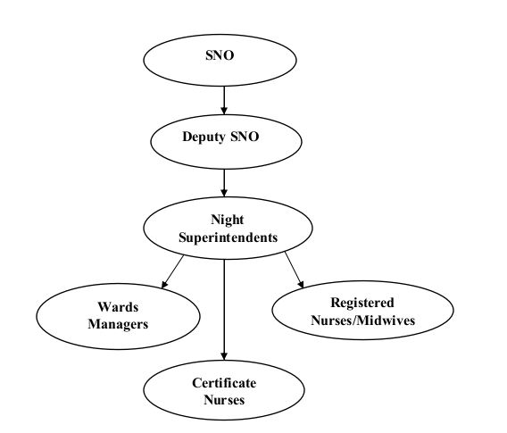
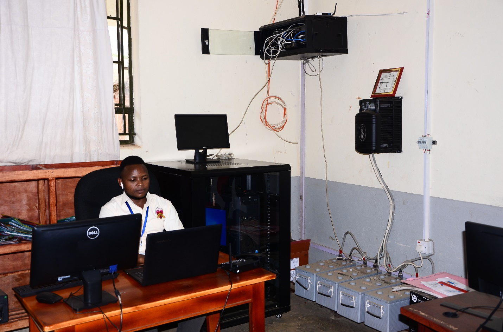

Departments
Administration
The administration department is headed by the hospital administrator which comprises of all non-medical staff.
It is headed by Sr. Cecilia Atayo, The Hospital Administrator
Departments
Medical & Para-medics
The administration department is headed by the hospital administrator which comprises of all non-medical staff.
It is headed by Dr. Kyangwa Joseph, The Medical Director
Departments
Nursing
The Nursing Section is the core team that offers Nursing care at St. Daniel Comboni Hospital Kyamuhunga.
This department is headed by Dr. Kyangwa Joseph, The Medical Director
Overall Objective of Nursing Department
To care for the sick and bring healing of both mind and body by offering and promoting holistic life for all and to continuously carry out the work of Jesus Christ which He began while on earth this is witnessing to Jesus Mission. The nurses do a lot of work in the hospital, they work hand in hand with the doctors, during ward rounds, discharging patients, dispensing and giving the prescriptions to all patients. They work /do Day and Night duties as scheduled.
The Senior Nursing Officer (SNO)
This is the Head of the Nursing Section. She is a member of the Hospital Top Management Team. She wears a white uniform with a black belt. She is a double Registered Nurse (URN/URM).
The Deputy Senior Nursing Officer
She assists the Senior Nursing Officer. She is directly supervised by the Senior Nursing Officer.
Night Superintendents
These are among the chosen few, appointed by the Top Management Team of the hospital to;
Night-supervise others on night duty besides their other responsibilities in the hospital
and are directly supervised by the Senior Nursing Officer.
They contribute a lot to the
smooth running of the entire hospital activities.
Ward Managers
These are heads of different units/departments within the hospital like, Out Patient Department,
Inpatient Department, Children Ward, Operating Theater, Pharmacy and Art Clinic Departments.
They make monthly reports and Duty Rostas (Time-Table) for the staffs and chair meetings in their departments;
they order drugs from the pharmacy for the patients in accordance with the prescriptions of the doctors.
Registered Nurses/Midwives
These are diploma holders in either Nursing or Midwifery. They wear white Uniforms and white cap
with a red belt if 5 or more years of service or yellow if below the 5years.
This defines Seniority in service.
Certificate Nurses /Midwives.
These are Junior Officers either trained as Nurses or Midwives. These wear a pink Uniform .The midwives are differentiated from Nurses with white collar uniform while Nurses have a white stripe cap. All Staffs in St. Daniel Comboni Hospital Kyamuhunga wear the Hospital ID while on duty Indicative of St Daniel Comboni Hospital Staff.(Employees of St Daniel Comboni Hospital). This is warn regardless of professional cadres. “But to show the ultimate, oneness of brothers and sisters of a family that stays and works together”.

Departments
Pastoral
The mission and vision of the hospital is to promote holistic life to all and witnessing to Jesus Christ by providing quality health care to the community. The hospital has got the Reverend Sisters and trained staff in pastoral care with the help of UCMB who visit patients on wards every morning. They nourish patients spiritually through praying for them and sometimes giving counselling to individuals in need. Every Friday of the week, staff and patients receive Eucharistic celebration of mass from the priests of the parish. This is aimed at improving the staff and patients’ spiritual life. The hospital usually celebrate mass on special occasions like Comboni’s day and world day of the sick etc.
Departments
Health Insurance
St. Daniel Comboni Hospital is one of the health facilities under the Uganda Health Cooperative scheme (UHC)
commonly Known as TWETAMBIRE.
The main objective of this scheme is to provide accessible and affordable services to the community.
The scheme works with organized group in the community which pulls resources together and make quarterly
payments in terms of premiums to the facility. In this scheme, members of the group gets health services at
a subsidized cost hence encouraging members to seek health care services early. This has improved the health
seeking behavior among the surrounding communities since the costs are shared as premiums per quarter.
Under this program, the hospital undertakes health education, community sensitization on preventable
diseases hygiene and sanitization.
Departments
MONITORING AND EVALUATION (M&E)
The hospital has got a strong and well trained Monitoring and Evaluation (M&E) team/ system headed
by the hospital data manager who doubles as the Information and Communication Technology (ICT) manager.
The Monitoring and Evaluation unit being the heart of the hospital, it supports the hospital in all data
collection, analysis, and learning activities to help ensure accountability and efficiency from start
to finish for all programs and projects, both new and established throughout St. Daniel Comboni hospital.
It is strong and best due to the support from the Ministry of Health which provide us with the HMIS systems,
implementing partners who support the hospital financially and sometimes with M&E systems,
hospital management and fellow staff.
It is headed by Tusingwire Denis Hospital Data Manager

Departments
Staff Recognition Program
St. Daniel Comboni Hospital has got very dedicated staff and as part of motivation, the hospital management team and board of governors recognize the best performers, innovators, long serving staff etc. with simple awards like scholarships, certificate, end of year parties, non-cash items on special days like festive seasons, giving shout outs etc